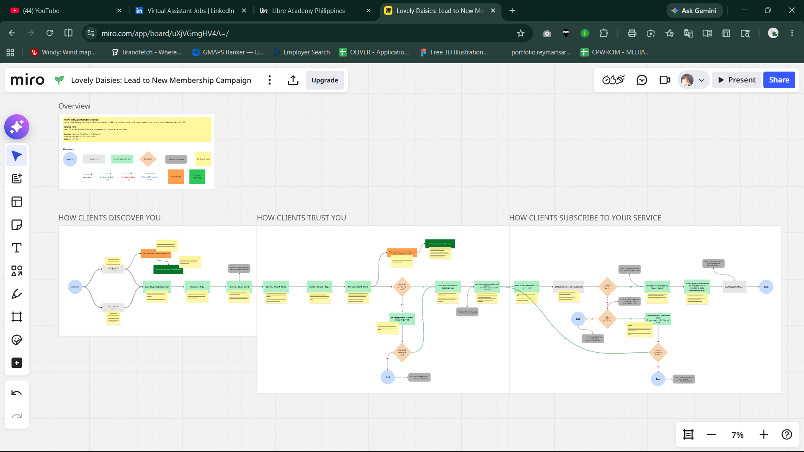
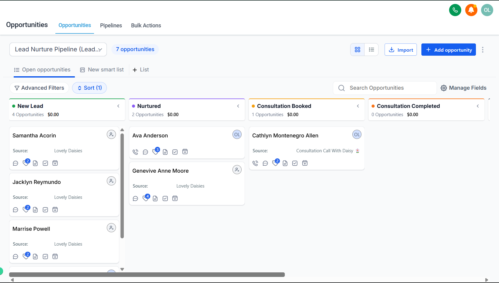

Lovely Daisies — GHL customer journey
A full GoHighLevel build for a wellness brand that relied on manual follow-ups for every lead — replacing it with a funnel that runs itself from first contact through booking and nurture.

THE CHALLENGE
Every lead and consultation booking required manual follow-up — no automated way to move a contact from inquiry to booked call to client.
THE APPROACH
-
01
Funnel mapping
Mapped the full customer journey in Miro before touching any tool, so every step had a clear purpose.
-
02
CRM & pipeline build
Built out the CRM, pipelines, and contact tagging inside GoHighLevel to match the mapped journey.
-
03
Automation
Wired up email/SMS automations so leads move from capture to booking to nurture without manual work.
THE WORK, IN SCREENSHOTS




AUTOMATION BUILDS, FROM NURTURE TO ACTIVE BUYER


THE RESULT
A self-running customer journey — no more manual follow-ups falling through the cracks.